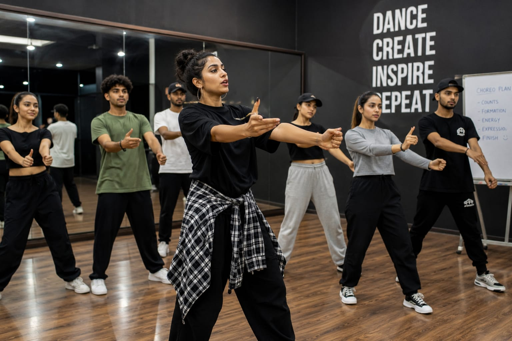

- When you watch a group dance or solo dance in a video or on a stage, the dancers perform every move perfectly together.
- Someone created those dance steps and coordinated every single movement.
- That person is called a Choreographer.
- 👉 In simple words: Choreographers create dance steps and teach performers how to dance together.
Choreographer
🧑💻 What Do They Do?

🎓 How to Become a Choreographer
These beginner-level courses help students learn dance basics, rhythm, movement coordination, stage confidence, and performance skills.
Certificate in Dance Choreography
Duration: 3 – 6 Months
Eligibility: Class 10 Pass
Entrance Exam: Direct Admission / Practical Audition
Diploma in Dance & Performing Arts
Duration: 1 – 2 Years
Eligibility: Class 10 Pass
Entrance Exam: Direct Admission / Basic Fitness Test
Note: Most beginner dance and choreography courses after 10th focus on practical performance skills and do not require national-level entrance exams.
These undergraduate programs help students improve dance techniques, choreography, stage performance, creative direction, and team coordination skills.
Bachelor of Performing Arts (BPA) in Dance
Duration: 3 – 4 Years
Eligibility: 10+2 Pass (Any stream)
Entrance Exam: CUET UG / Audition
Bachelor of Arts (BA) in Dance
Duration: 3 Years
Eligibility: 10+2 Pass
Entrance Exam: Merit-Based Admission / Audition
Note: Most dance and choreography degree programs after 12th include practical auditions to test rhythm, coordination, flexibility, and stage performance.
These advanced programs help dancers master choreography, stage direction, creative leadership, and professional performance techniques.
Master of Performing Arts (MPA) in Dance
Duration: 2 Years
Eligibility: BPA or Graduate with dance experience
Entrance Exam: University Entrance Test & Practical Audition
Post Graduate Diploma in Choreography / Dance
Duration: 1 – 2 Years
Eligibility: Graduation (Any stream)
Entrance Exam: Advanced Technical Audition
Note: Most postgraduate choreography programs focus heavily on practical performance, choreography creation, and stage leadership skills.
These online choreography programs help students improve dance techniques, routine creation, stage coordination, rhythm, and performance direction skills.
Introduction to Choreography & Dance Studies
Duration: 4 – 6 Weeks
Eligibility: Open to All (Beginner level)
Exam: No Exam (Peer-graded assignments)
Provider: Coursera
Dance Technique & Performance Courses
Duration: Self-paced (2 – 10 Hours)
Eligibility: Open to All
Exam: No Exam (Course completion certificate provided)
Provider: Udemy
Dance & Performance Classes
Duration: Self-paced (5+ Hours)
Eligibility: Open to All
Exam: No Exam (Video lessons by industry experts)
Provider: MasterClass Platform
Creative Choreography & Routine Building
Duration: Self-paced (1 – 3 Hours)
Eligibility: Open to All
Exam: No Exam (Hands-on class projects)
Provider: Skillshare
Note: Most online choreography and dance courses are beginner-friendly and focus on practical learning without entrance exams.
Note:
(Age limits, marks, and admission process may vary depending on the college or state. These courses are available in many colleges and universities across India. You can choose colleges based on your location, budget, and entrance exams.)
🏛️ Top Dance Colleges & Institutes for Choreography in India
(Tap on a college to view details)
After 10th (Certificates & Short-Term)
Terence Lewis Professional Training Institute (TLPTI), Mumbai Indira Gandhi National Centre for the Arts (IGNCA), New Delhi Kathak Kendra (National Institute of Kathak Dance), New DelhiAfter 12th (Degrees & Professional Diplomas)
Natya Institute of Kathak and Choreography, Bengaluru Kalakshetra Foundation, Chennai Christ University, Bengaluru Nalanda Nritya Kala Mahavidyalaya (University of Mumbai), Mumbai Kerala Kalamandalam, ThrissurAfter Graduation (PG & Advanced Craft)
Rabindra Bharati University, Kolkata Indira Kala Sangeet Vishwavidyalaya (IKSVV), Khairagarh Jain University, BengaluruSTEP 1
Imagine you are working as a Choreographer.
STEP 2
You create dance steps, plan routines, and guide dancers during practice.
STEP 3
You choreograph performances for movies, stage shows, music videos, or competitions.
STEP 4
If this excites you, this career may suit you.
Where do Choreographers work? (Job Roles + Growth)
These are some roles you can explore in choreography and dance direction.
You usually start with beginner roles and grow with experience.
🔵 Beginner Roles
💃
Assistant Choreographer
(After Certificate / Online Course)
Helps choreographers teach and manage dance rehearsals.
🎵
Junior Movement Coach
(After Diploma / Performing Arts Course)
Teaches basic dance moves and performance skills.
🔵 Mid-Level Roles
🎬
Independent Choreographer
(After Degree / Experience)
Creates dance routines for shows and music videos.
🏫
Studio Choreographer
(After Diploma / Degree + Experience)
Designs dance routines and trains dance groups.
🟣 Advanced Roles
⭐
Film / Stage Choreographer
(After PG Program + Experience)
Directs dance performances for films and stage shows.
🎭
Artistic Director
(After Advanced Degree + Experience)
Leads dance teams and manages creative performances.
🎬
Global Film Industries
They hire choreographers for movies, music videos, and stage performances.
📺
OTT & Streaming Platforms
They need choreographers for global dance shows and entertainment content.
💃
International Dance Studios
They train performers and create routines for competitions and events.
🌐
Global Talent Agencies
They connect choreographers with worldwide dance projects and tours.
(Click Yes or No for each question)
1. Do you enjoy dancing or watching dance performances?
2. Have you ever created your own dance steps?
3. Do you enjoy teaching dance moves to others?
4. Do you like coordinating group performances?
5. Would you enjoy creating dance routines for shows or videos?